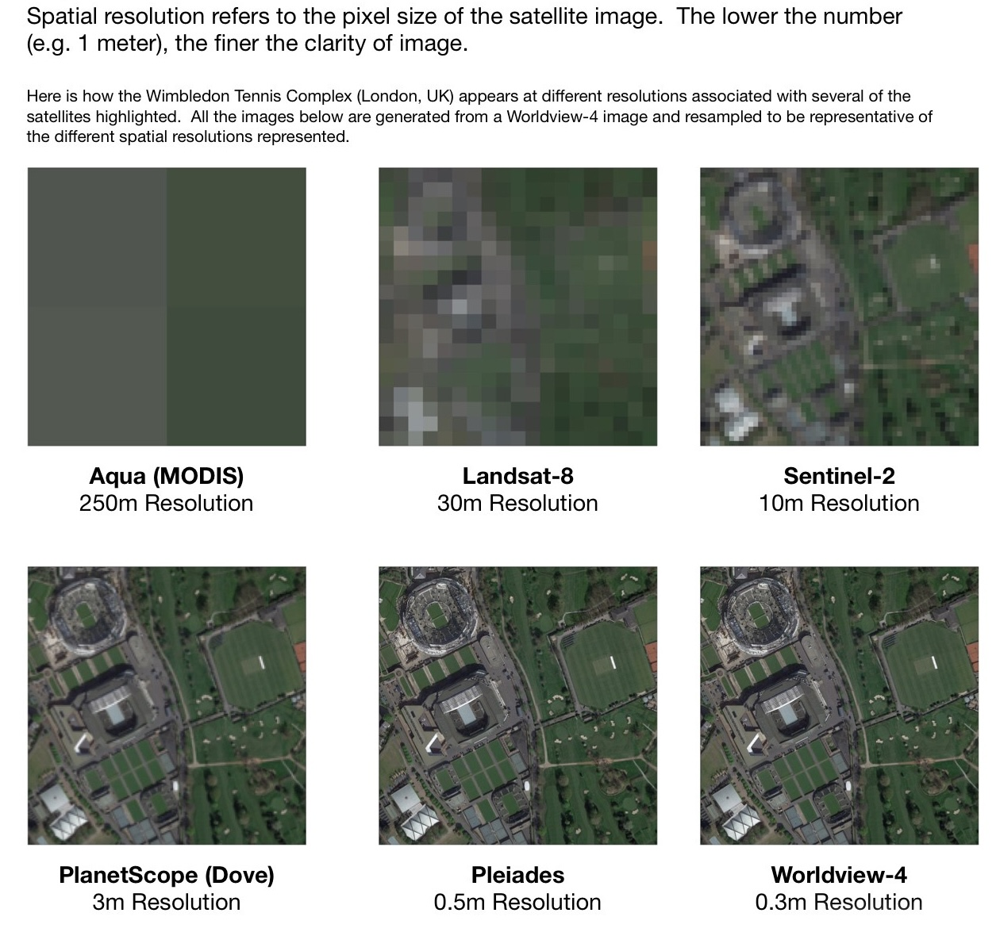
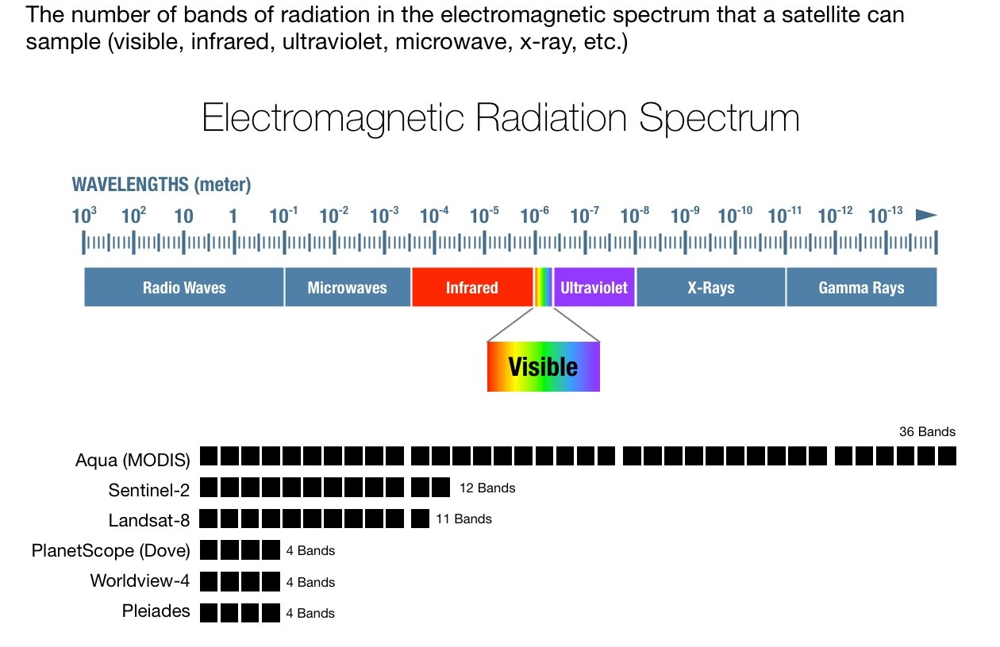
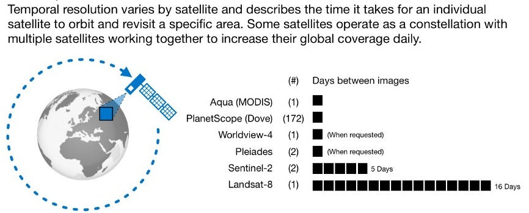

9 Choosing imagery
This chapter is in early draft form and may be incomplete.
When selecting satellite imagery for use with MOSAIKS, several key factors need to be considered. The choice of imagery should be guided by your specific research needs, label characteristics, and practical constraints like cost and processing requirements.
Based on your label resolution, a user needs to decide on:
- Available time range
- Sensor resolution
- Spectral resolution
- Temporal resolution
- Sensor type
- How to handle image quality (i.e. clouds)
- Processing level (i.e. orthorectification, normalization)
9.1 Time range
The operational lifespan of satellites is a crucial consideration when choosing imagery sources. Different satellite programs have varying launch dates and operational periods, which affects the historical depth of available data.
For instance, the Landsat program offers the longest continuous space-based record of Earth’s land surface, with missions dating back to 1972. In contrast, more recent satellite programs like Sentinel (launched in 2014) offer higher resolution imagery but have a shorter historical record.
Key considerations for time range include:
- Historical depth needed for your analysis
- Consistency of sensor technology over time
- Availability of calibration across different satellite generations
- Planned mission duration and data continuity
9.2 Sensor resolution (pixel size)
Spatial resolution refers to the size of each pixel in the satellite imagery, which determines the smallest object that can be detected. The choice of spatial resolution should be guided by:
- The physical size of features relevant to your labels
- The spatial scale of your analysis
- Storage and processing constraints
- Cost considerations (higher resolution typically means higher cost)
Common spatial resolutions: - Very high (< 1m): Individual trees, buildings, vehicles - High (1-10m): Small agricultural fields, urban infrastructure - Medium (10-30m): Large agricultural fields, forest stands - Low (> 30m): Regional land cover, climate patterns

9.3 Spectral resolution (EM range)
Spectral resolution describes the number and width of electromagnetic wavelength bands that a sensor can detect. Different features on Earth’s surface reflect or absorb radiation differently across these bands.
Key spectral regions include: - Visible light (RGB): 0.4-0.7 μm - Near-infrared (NIR): 0.7-1.1 μm - Short-wave infrared (SWIR): 1.1-3.0 μm - Thermal infrared: 3.0-14 μm - Microwave: > 1 mm
Applications by spectral band: - RGB: Natural color imagery, built environment - NIR: Vegetation health, biomass - SWIR: Mineral mapping, moisture content - Thermal: Temperature, urban heat islands - Microwave: Cloud penetration, soil moisture

9.4 Temporal resolution (revisit rate)
Temporal resolution refers to how frequently a satellite revisits the same location. This can range from multiple times per day to several weeks between observations.
Factors affecting temporal resolution: - Single satellite vs constellation systems - Orbital parameters - Sensor swath width - Cloud cover frequency - Latitude of study area
Trade-offs to consider: - Higher temporal resolution often means lower spatial resolution - Cost increases with temporal frequency - Data storage and processing requirements grow with frequency

9.5 Cloud cover
Cloud cover presents a significant challenge in optical satellite imagery. Several strategies exist for handling cloud contamination:
- Cloud masking algorithms
- Composite images over time periods
- Use of radar satellites (which penetrate clouds)
- Strategic timing of image acquisition
- Gap-filling techniques
Impact on analysis: - Reduced data availability - Temporal inconsistency - Need for quality control - Processing overhead
9.6 Sensor type
Satellite sensors broadly fall into two categories:
9.6.1 Passive sensors
- Detect natural radiation (reflected sunlight or emitted heat)
- Include optical and thermal sensors
- Limited by atmospheric conditions
- Typically easier to interpret
9.6.2 Active sensors
- Emit their own energy and measure the return signal
- Include radar (SAR) and lidar
- Can penetrate clouds and operate at night
- Often require more complex processing

9.7 Public satellites
9.7.1 Optical sensors
- Sentinel-2: 10-60m resolution, 5-day revisit, 13 spectral bands
- Landsat 8/9: 15-100m resolution, 16-day revisit, 11 spectral bands
- MODIS: 250m-1km resolution, daily revisit, 36 spectral bands
9.7.2 Radar sensors
- Sentinel-1: C-band SAR, 5-40m resolution, 6-12 day revisit
- NISAR: L-band and S-band SAR (launching 2024)
9.7.3 Other
- VIIRS: 375m-750m resolution, daily global coverage
- ASTER: 15-90m resolution, 16-day revisit, 14 spectral bands
9.8 Private satellites
9.8.1 Very high resolution
- Maxar WorldView: 31cm panchromatic, 1.24m multispectral
- Planet SkySat: 50cm panchromatic, 1m multispectral
- Airbus Pleiades: 50cm panchromatic, 2m multispectral
9.8.2 High resolution
- Planet PlanetScope: 3-5m resolution, daily revisit
- Planet RapidEye: 5m resolution, 5.5-day revisit
- SPOT: 1.5-6m resolution, 26-day revisit
9.8.3 Specialized
- ICEYE: X-band SAR, <1m resolution
- Capella Space: X-band SAR, 50cm resolution
- GHGSat: Greenhouse gas monitoring
9.9 Processing levels
Satellite imagery is typically available at different processing levels. Understanding these levels is crucial for selecting appropriate data for your analysis.
9.9.1 Common processing levels
9.9.1.1 Level 0: Raw data
- Unprocessed instrument data
- Requires extensive processing
- Not typically used for analysis
- Only available from some providers
9.9.1.2 Level 1: Radiometric corrections
- Basic radiometric calibration
- May include systematic geometric corrections
- Common formats:
- Level 1A: Raw data with radiometric calibration
- Level 1B: Includes geometric corrections
- Level 1C: Orthorectified and radiometrically calibrated
9.9.1.3 Level 2: Surface reflectance
- Atmospheric corrections applied
- Converted to physical units
- Cloud and shadow masks
- Ready for most analyses
9.9.1.4 Level 3: Derived products
- Temporal composites
- Mosaics
- Specific indices (e.g., NDVI)
- Gap-filled products
9.9.2 Key processing considerations
9.9.2.1 Orthorectification
- Corrects geometric distortions
- Accounts for:
- Terrain effects
- Satellite position
- Earth curvature
- Critical for accurate spatial analysis
9.9.2.2 Atmospheric correction
- Removes atmospheric effects
- Accounts for:
- Aerosols
- Water vapor
- Atmospheric scattering
- Important for multi-temporal analysis
9.9.2.3 Radiometric calibration
- Converts raw sensor values to physical units
- Ensures consistency across:
- Time
- Different sensors
- Various atmospheric conditions
9.10 Choosing the right combination
When selecting imagery for your application, consider these practical guidelines:
9.10.1 For agricultural applications
- Resolution: 10-30m
- Temporal frequency: Weekly or biweekly
- Key bands: NIR, Red, SWIR
- Recommended sensors: Sentinel-2, Landsat 8/9
9.10.2 For urban applications
- Resolution: 0.5-10m
- Temporal frequency: Monthly to annual
- Key bands: RGB, NIR
- Recommended sensors: WorldView, Planet, Sentinel-2
9.10.3 For forest monitoring
- Resolution: 10-30m
- Temporal frequency: Monthly to annual
- Key bands: NIR, SWIR, Red
- Recommended sensors: Landsat, Sentinel-2
9.10.4 For water resources
- Resolution: 10-30m
- Temporal frequency: Weekly to monthly
- Key bands: NIR, SWIR, Blue
- Recommended sensors: Sentinel-2, Landsat 8/9
9.11 Cost considerations
Remember that the most expensive or highest resolution imagery isn’t always the best choice. The optimal choice balances your scientific needs with practical constraints.
9.11.1 Free options
- Landsat program (30m)
- Sentinel program (10m)
- MODIS (250m-1km)
- VIIRS (375m-750m)
9.11.2 Commercial options
- Very high resolution (sub-meter): $15-25/km²
- High resolution (1-5m): $5-15/km²
- Medium resolution (5-30m): $1-5/km²
- Subscription services: Variable pricing
9.12 Making the final decision
Consider these questions when making your final imagery selection:
- What is the minimum spatial resolution needed?
- How frequent do observations need to be?
- What spectral bands are required?
- What is the time period of interest?
- What is your budget?
- What processing level is needed?
- How will you handle clouds and data gaps?
- What are your storage and computing resources?
The answers to these questions will guide you toward the most appropriate imagery source for your specific application.
In the next chapter, we will explore how to access and process satellite imagery for use with MOSAIKS.